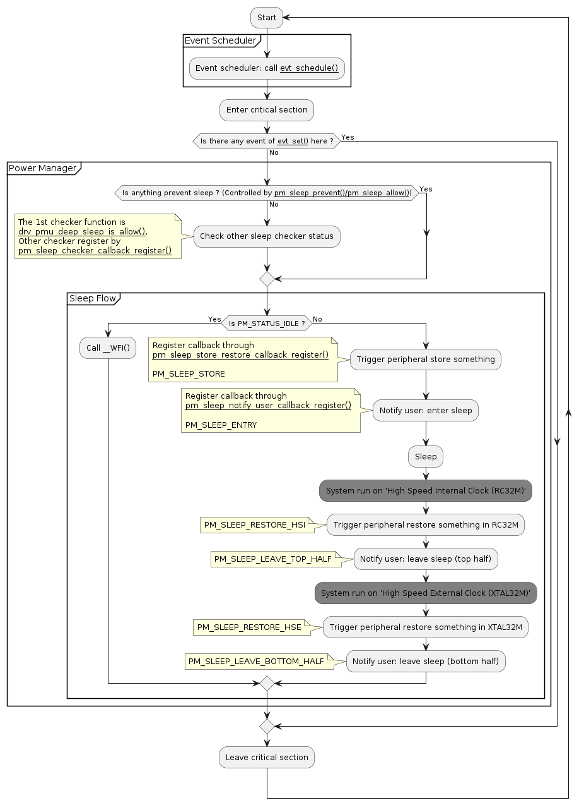

Power Mode
The chip has 5 power modes: active mode, idle mode, sleep mode, deep sleep mode, ultra deep sleep mode
- In the active mode and idle mode, the clock of digital modules (Timer, UART, SPI, PWM ...) can be enabled or disabled independently. The power of analog modules which have independent power domain can also be enabled or disabled by application.
- In the idle mode, the clock of processor is gated and all of the interrupts can wakeup system.
- In the sleep mode, the interrupts of GPIO, PMU_TIMER and BLE can wakeup the system.
- In the deep sleep mode, the interrupts of GPIO can wakeup system. And if 32k is running, RTC also can wakeup system. BLE stack does not work in the deep sleep mode.
- In ultra deep sleep mode, wakeup source is similar to deep sleep. It also power off all SRAM, the wakeup will trigger system reboot. Use function pm_sleep_ultra_sleep_mode_enable() to enable it.
The following table shows the difference between the 5 modes:
| Mode | CPU Clock | CPU Power | Wakeup Source | Have Power Modules |
| Active | ON | ON | N/A | All Modules (** ) |
| Idle | OFF | ON | All Interrupts | All Modules (** ) |
| Sleep | OFF | OFF | GPIO, PMU_TIMER, LPTimer, RTC | SRAM, GPIO, 32K, PMU_TIMER, LPTimer(option), BLE(option), RTC(option) |
| Deep Sleep | OFF | OFF | GPIO, RTC | SRAM, GPIO, 32K(option), RTC(option) |
| Ultra Deep Sleep | OFF | OFF | GPIO, RTC | GPIO, 32K(option), RTC(option) |
(** ) The power and clock of periphals which are not used can be closed.
The following table shows how to enter the different power modes:
| Mode | How |
| Active | CPU handles something (event of evt_set(), the RF of BLE is configuring, handle IRQ, ...) |
| Idle | Use API pm_sleep_prevent() to prevent sleep (some drivers have been called).
(or) IO is in wakeup state (reference drv_pmu_wakeup_pin_set).
(or) The RF of BLE is running. |
| Sleep | There are no pm_sleep_prevent().
(and) IO is not in wakeup state.
(and) The RF of BLE is not running. |
| Deep Sleep | The conditions of sleep mode are met.
(and) There is no BLE (no adv/connection/scan) running.
(and) There is no 32k timer (evt_timer, WDT...) running. |
| Ultra Deep Sleep | The conditions of deep sleep mode are met.
(and) function pm_sleep_ultra_sleep_mode_enable() is enabled. |
(or) is logical OR. (and) is logical AND.
The following table shows the minimum requested power mode for each modules:
| Modules | Minimum Requested Power Mode |
| GPDMA | Idle |
| GPADC | Idle |
| CPM | Idle |
| I2C | Idle |
| I2S | Idle |
| SPI | Idle |
| Timer | Idle |
| UART | Idle |
| AES | Idle |
| Audio | Idle |
| IRTX | Idle |
| QSPI | Idle |
| QDEC | Idle |
| RGB | Idle |
| TRNG | Idle |
| SHA256 | Idle |
| Flash | Idle (**) |
| 2.4G | Idle (**) |
| Pinmux | Idle (**) |
| WDT | Sleep |
| BLE | Sleep |
| RTC | Sleep |
| PMU_Timer | Sleep |
| LPTimer | Sleep |
| GPIO (***) | Idle (**) |
| GPIO(in PMU) | Deep Sleep |
| PMU | Deep Sleep |
(**) HW restore its regisers automatically after wakeup.
(***) The GPIO module consists of two parts, one part located in the PMU module, the other part does not belong to PMU and it does not working in sleep mode.
Power Control
Power mode control depends on user setting, peripherals’ status and BLE’s status.
- The user power mode setting is managed by user who can use API pm_sleep_prevent() / pm_sleep_allow() to allow or prevent sleep.
- Before sleep, the sleep status is checked. That can use API pm_sleep_checker_callback_register() to customized, and 1st checking callback is drv_pmu_deep_sleep_is_allow().
- The most of the peripherals’ status is managed by drivers. Actually the driver knows when the peripherals cannot enter into sleep mode. For example when the ADC is sampling, the ADC driver knows the system cannot enter into sleep mode at this time. User does not take care of the peripherals’ status.
- Some peripherals require user to manage. For example, when UART receive data, the driver does not know when the long packet is recived. So user should tell system the information.
- The status of BLE is managed by BLE stack.
- Note
- When the system is waked up from sleep mode, all register setting of some peripherals are lost and the peripherals need to be reconfigured. Those reconfigured peripherals include: GPIO, Timer, UART, SPI, DMA, ADC, I2C, ....
System Scheduler and Power Manager Flow
The system scheduler and power manager are included in evt_schedule() which reference Operating System. The flow is shown as follow:

System Scheduler and Power Manager Flow
- Note
- When system come into SLEEP mode, the CPU is powered down. So the debug interface (SWD) will be disconnected and KEIL losts connection. The function pm_sleep_enable() can disable SLEEP mode for better debugging.
Reference Code
{
switch(sleep_state)
{
break;
break;
break;
}
}
static void hardware_init(void)
{
......
}
{
hardware_init();
......
while(1) {
OM_CRITICAL_BEGIN();
}
OM_CRITICAL_END();
}
}
int main(void)
main entry of program
Definition: ble_app_simple.c:142
uint32_t evt_get_all(void)
Get all event status.
void evt_schedule(void)
Event scheduler entry point.
pm_sleep_state_t
Sleep state.
Definition: pm.h:78
void pm_sleep_notify_user_callback_register(pm_sleep_callback_t notify_cb)
system sleep notify user callback register
pm_status_t
PM status.
Definition: pm.h:64
void pm_power_manage(void)
pm power manage, it shall be called in critical section(disable global interrupt)
@ PM_SLEEP_LEAVE_BOTTOM_HALF
Definition: pm.h:90
@ PM_SLEEP_LEAVE_TOP_HALF
Definition: pm.h:87
@ PM_SLEEP_ENTRY
Definition: pm.h:81
- Note
- When both sleep and GPIO input interrupts are enabled, the GPIO input interrupt must be configured as
GPIO_TRIG_RISING_FAILING_EDGE. Because the 2nd edge is used to trigger pm system to detect the sleep state.